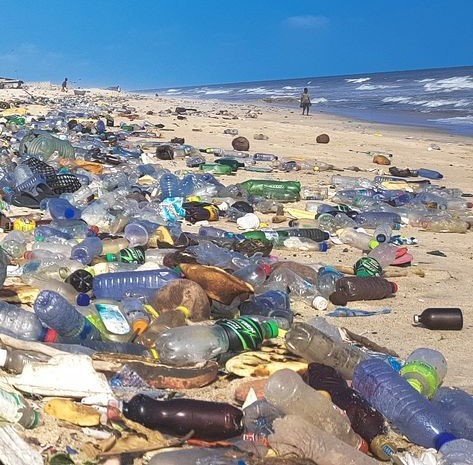
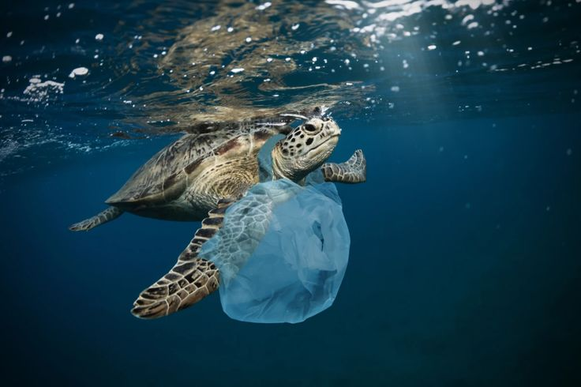
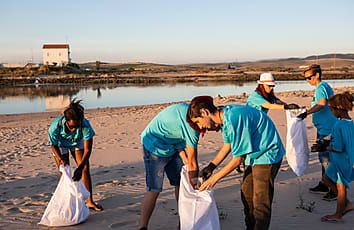
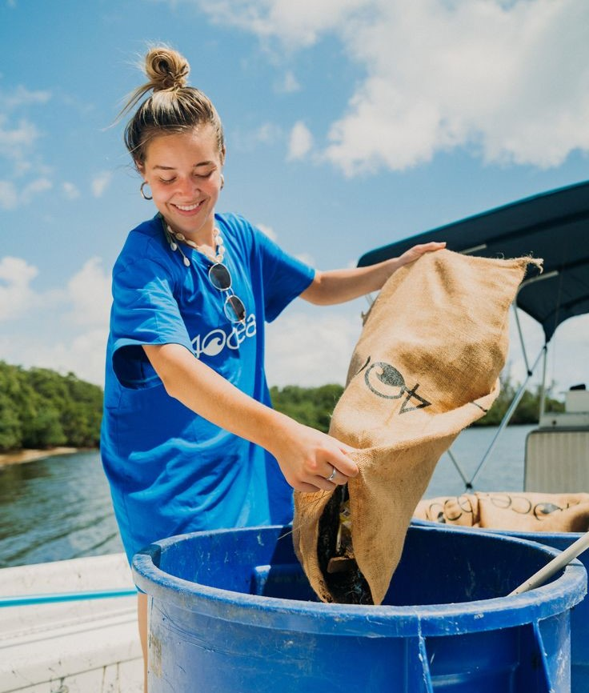
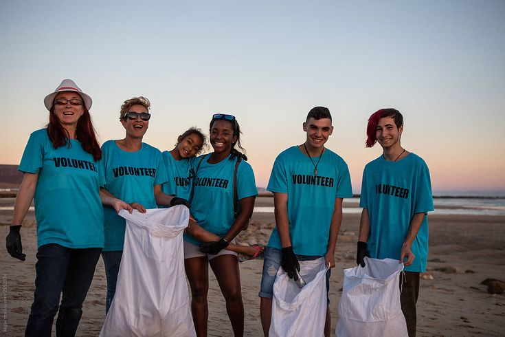

OVERVIEW
To preserve the natural beauty of our beaches and to safeguard our seas, beach cleanups are essential. Plastic, trash, and other harmful substances that could harm marine life and damage ecosystems wash up on our beaches every year. We address this issue head-on by planning and participating in beach clean-ups, clearing harmful waste out of the way before it can wash into the ocean and do further harm.
These cleanups are vital to maintaining the health of marine ecosystems, and not only a means of keeping our beaches clean. The impact of these activities is huge, ranging from protecting species that may swallow or become entangled in waste to ensuring safer, cleaner beaches for recreational consumption. They also promote community involvement and raise awareness of the wider scope of ocean pollution.
This review will discuss the worth of beach clean-ups, their effect on ecosystems and marine life, and the numerous ways that individuals and communities may get engaged to change things for the better.
WHY BEACH CLEANUPS MATTER?
Beach cleanups are essential for maintaining the health and beauty of our coastlines. Each year, vast amounts of plastic and trash wash up on our shores, posing threats to marine life and diminishing the natural allure of our beaches. By participating in these cleanups, we help remove dangerous debris, making the environment safer and cleaner for both people and wildlife. These efforts are crucial for sustaining the health of our seas and preserving the pristine condition of our beaches.

IMPACT ON MARINE LIFE
Beach clean-ups are essential to the preservation of marine life. Numerous marine creatures, such as fish, birds, and turtles, frequently divert plastic and other trash for food, which can have fatal effects on their health. By taking part in beach clean-ups, you may directly contribute to the safety and survival of these species by eliminating this toxic waste. Furthermore, litter-free beaches encourage healthier ecosystems where species may survive, reproduce, and nest without fear of harm.

JOIN THE FUN
Engaging in beach cleanups is not only a fulfilling experience but also a means to contribute to the worldwide battle to address ocean pollution. These cleanups bring individuals from all walks of life together with the same objective of maintaining the hygiene of our coasts. Plastic makes up the majority of the waste gathered; if unmanaged, it can degrade into microplastics that pollute the ocean. Participating will enable you to deal with this critical issue and significantly contribute to the protection of our beaches and oceans.

HOW CAN YOU HELP?
Contributions to beach cleanups can be made in several ways. Engaging part in nearby cleanups, which aid in collecting waste and beach cleanliness, is one of the most direct methods. Further ways to stop pollution from reaching our coasts are to use less plastic yourself and to make sure that waste can be disposed of properly. A collective responsibility for the preservation of the environment is promoted and the impact of beach cleanups increases when people are made aware of their significance and encouraged to participate.

SUCCESS STORIES
Beach cleanups all around the world have led to many successful stories of transforming polluted coastlines into pristine, welcoming environments. For instance, the annual International Coastal Cleanup has removed millions of pounds of trash from beaches and waterways, making a tangible impact on the health of marine ecosystems. These efforts not only clean up the environment but also inspire communities to take greater action in protecting our oceans. The stories of these successful campaigns showcase the power of collective effort in addressing ocean pollution.
